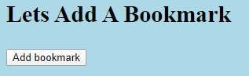

Bookmark App
This is the second Thinkful EI project. This one was a fair bit tougher as there was a lot less hand holding on this one. This app allows the user to add bookmarks, edit them, rate them, and delete them. This project focused on API use and asynchronous web design. Please don't mind the hideous styling; there weren't any points for style, so don't look at it as ugly--look at it as efficient!
 Github Link
Github Link

Live Website Link